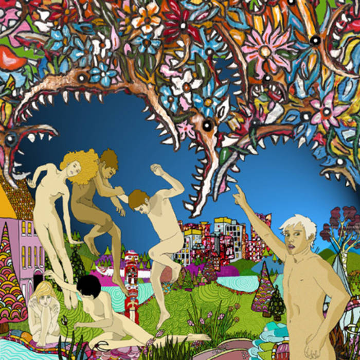

Skeletal Lamping (2008)
Kevin Barnes sticks to his alter ego, Georgie Fruit, in of Montreal's ninth studio album, Skeletal Lamping. The title of the album translates literally to the theme of this album. Barnes states that the album is a conglomeration of all of the thoughts possesses his mind in order to make sense of them through his art. "Skeletal" meaning his brain, and "Lamping" is a technique used to dazzle animals so that they can be more closely approached and examined.
Track Listing
- Nonpareil of Favor - 5:48
- Wicked Wisdom - 5:00
- For Our Elegant Caste - 2:35
- Touched Something's Hollow - 1:26
- An Eluardian Instance - 4:35
- Gallery Piece - 3:48
- Women's Studies Victims - 2:59
- St. Exquisite's Confessions - 4:35
- Triphallus, to Punctuate! - 3:23
- And I've Seen a Bloody Shadow - 2:23
- Plastis Wafer - 7:11
- Death Isn't a Parallel Move - 3:01
- Beware Our Nubile Miscreants - 4:52
- Mingusings - 3:01
- Id Engager - 3:24
Featured Track
Gallery Piece
In my opinion, this track is the most epic love song in the history of music. Barnes repeats the beginning phrase "I wanna" and elaborates on all the things he wants out of a relationship. He speaks truthfully about the good, the bad, and the ugly that is associated with crazy, intense love.
Lyrics
I wanna be your love
I wanna make you cry
And sweep you off your feet
I wanna hurt your pride
I wanna slap your face
I wanna paint your nails
I wanna make you you scream
I wanna braid your hair
I wanna kiss your friends
I wanna make you laugh
I wanna dress the same
I wanna defend you
I wanna squeeze your thighs
I wanna kiss your eyelids
And corrupt your dreams
I wanna crash your car
I wanna scratch your cheeks
I wanna make you sick
I wanna sell you out
Want to expose your flaws
I wanna steal your things
I wanna show you off
I wanna tell you lies
I wanna write you books
I wanna turn you on
I wanna make you cum
Two-hundred times a day
I wanna dry tears
Every time your sad
I wanna be your what's happening
I wanna be your only friend
I only go all the way
This time I'm not pretending
I can't take the trash
Your trashy friends are spreading about us
They've got like fifty personalities
Oh girl, that's so messed up
You see that sculpture on the hill?
That's where she cleared me out
Forever
They're monitoring my sub-conscious massacres I know
Bringing it closer to the surface so it's easily pervertable
I want to be a beast
I want to make you proud
And play with your head
I want to take you out
Make you feel adored
And buy you everything
I want to hurt you bad
Make you paranoid
And say the sweetest things
I want to help you grow
And for eternity
I want to be your what's happening
What's happening?